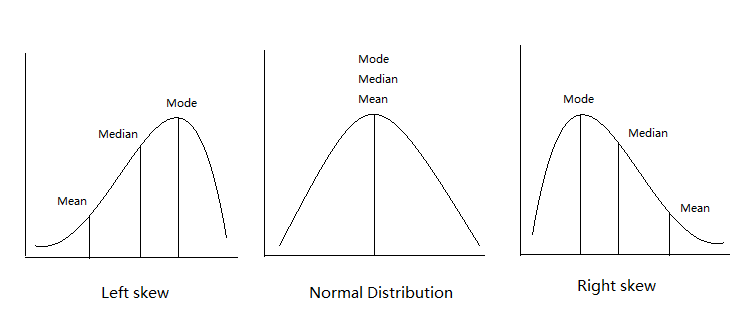
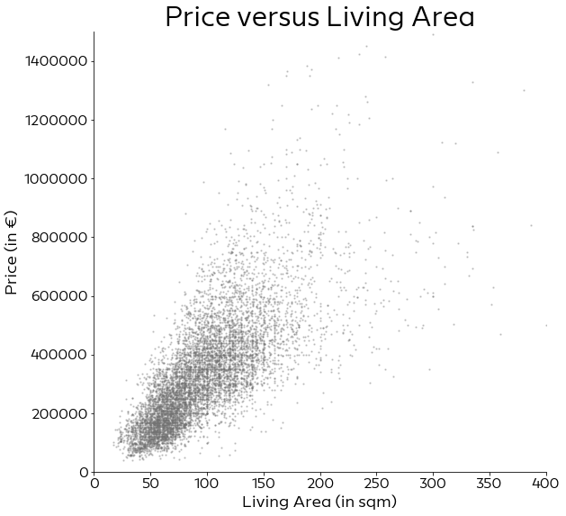
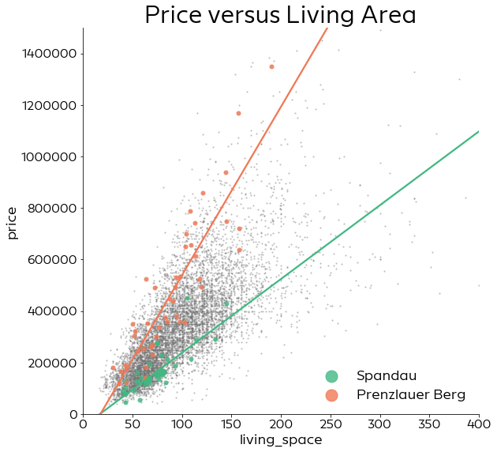
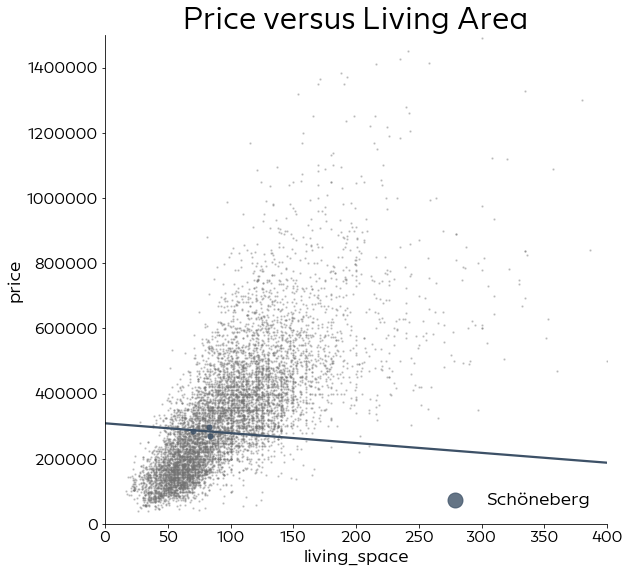
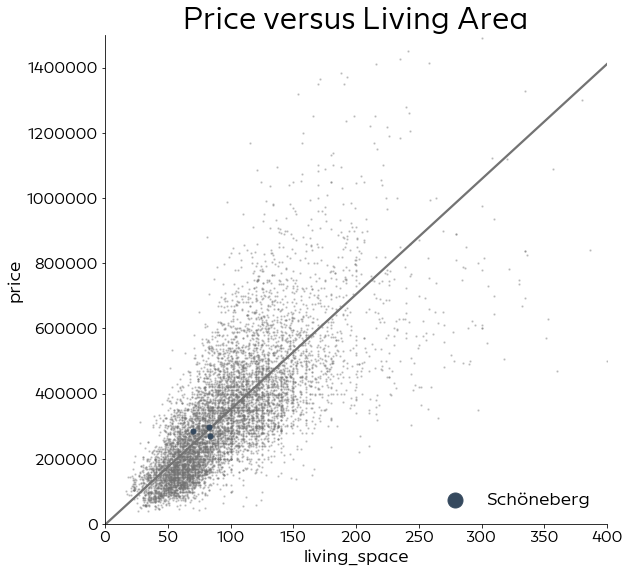

Intuitive Bayesian Modeling with PyMC3
at: Data Umbrella
by: Oriol Abril Pla
Bayesian paradigm
Data is considered fixed once observed
Model parameters are treated as random
Data is considered fixed once observed
Model parameters are treated as random
\[p(\theta \mid y)\]
\[p(\theta \mid y)\]
Prior information
- Physical constraints
- Model constraints
- Prior studies
- ...
Uncertainty
Probabilistic Programming
Building blocks
Generative modeling
Generative modeling
Automagical solvers
Inference algorithms
MCMC: HMC+NUTS, Metropolis, Gibbs...
Variational Inference: ADVI (+mini batch ADVI), OPVI

PyMC3
Intuitive
Python-driven
Extensible
Community driven
PyMC3 in practice
Coal mining disasters
Example from Salvatier, J., Wiecki, T. V., & Fonnesbeck, C. (2016). Probabilistic programming in Python using PyMC3. PeerJ Computer Science
| Video | Code |
|---|---|
| (talk by @fonnesbeck at Montreal Python) | (2nd case study) |
Model building
with pm.Model():
disasters = pm.Poisson(
"disasters", rate, observed=data
)
Model building
with pm.Model():
rate = pm.math.switch(s >= years, e, l)
disasters = pm.Poisson(
"disasters", rate, observed=data
)
Model building
with pm.Model():
s = pm.DiscreteUniform(
"switchpoint", lower=t_0, upper=t_e
)
rate = pm.math.switch(s >= years, e, l)
disasters = pm.Poisson(
"disasters", rate, observed=data
)
Model building
with pm.Model():
s = pm.DiscreteUniform(
"switchpoint", lower=t_0, upper=t_e
)
e = pm.Exponential("early_rate", 1.0)
l = pm.Exponential("late_rate", 1.0)
rate = pm.math.switch(s >= years, e, l)
disasters = pm.Poisson(
"disasters", rate, observed=data
)
Inference
with model:
trace = pm.sample(3000, tune=2000)
Multiprocess sampling (4 chains in 4 jobs)
CompoundStep
>Metropolis: [switchpoint]
>NUTS: [late_rate, early_rate]
Housing prices in Berlin
Example by @corrieaar at PyConDE & PyData Berlin 2019
| Video | Code | Slides |
|---|
Let's start with a linear regression
Let's start with a linear regression
Let's stop using a linear regression?
Let's go hierarchical!
Acknowledgements
This talk is heavily inspired by many other talks about Bayesian statistics and PyMC3 as well as by interactions with the whole PyMC3 and greater Bayesian OSS community on GitHub and Discourse
Special thanks go to PyMC3 and ArviZ core members, to Thomas Wiecki, Chris Fonnesbeck, Corrie Bartelheimer and Allen Downey, check out their profiles and websites for more amazing content!


Where to go next?
PyMC3 documentation: docs.pymc.io
PyMCon 2020 talks: publicly available on Discourse
Learn Bayesian Statistics Podcast: learnbayesstats.com